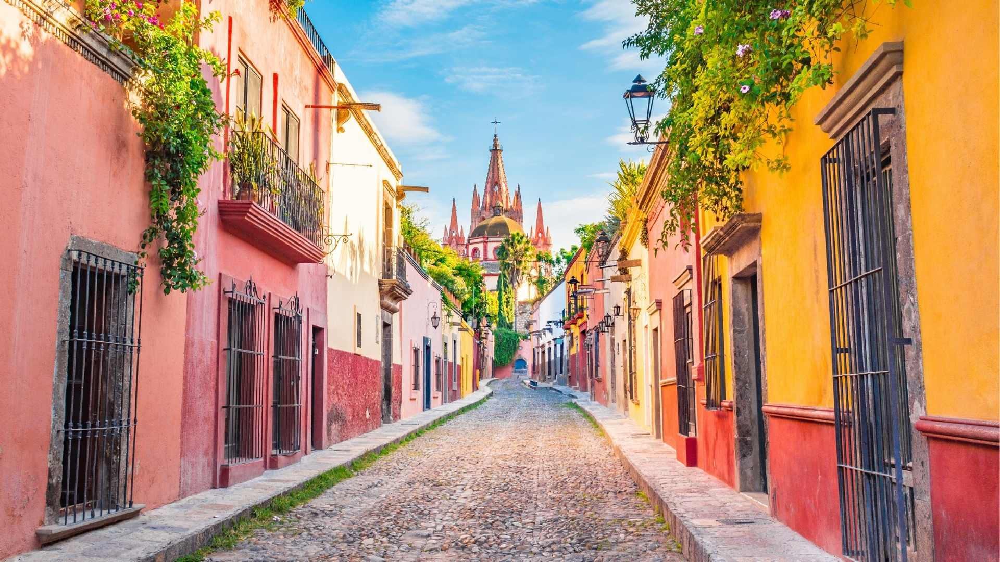

México y sus Pueblos Magicos
Bienvenidos a un viaje encantador a través de los "Pueblos Mágicos" de México, una colección de destinos que despiertan la imaginación y ofrecen una experiencia turística única. Desde calles empedradas hasta arquitectura colonial y festividades tradicionales, estos pueblos cautivan a visitantes de todo el mundo.